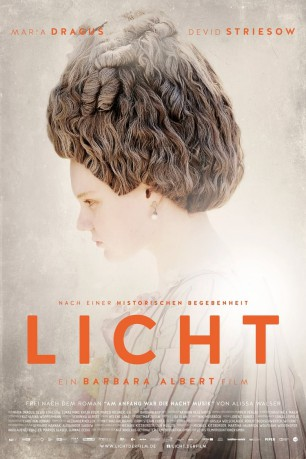

#9389 Licht
 gesehen am 30.08.2018
gesehen am 30.08.2018
 
 IMDB-Wertung: 6.5 / 10
IMDB-Wertung: 6.5 / 10  Metascore: 0
Metascore: 0 
Wien 1777. Die 18jährige, früh erblindete Pianistin Maria Theresia Paradis wird dem umstrittenen "Wunderarzt" Franz Anton Mesmer anvertraut. Sie genießt die neu gewonnene Freiheit in dessen Palais. Doch als seine Behandlung Wirkung zeigt und sie erste Bilder wahrnimmt, bemerkt sie mit Schrecken, dass sie ihre musikalische Virtuosität verliert...
Jahr: 2017
Dauer: 96 Minuten
FSK:
Land: Österreich Studio: Farbfilm-VerleihTonspuren:
Untertitel:
Auflösung: 1080p (1920x800) Größe: 3112 MB
Genre: Drama, Geschichte
Regisseur: Barbara Albert
Drehbuch: Kathrin Resetarits, Barbara Albert, Alissa Walser
Soundtrack:
Darsteller:
 Maria Dragus als Maria Theresia Paradis
Maria Dragus als Maria Theresia Paradis Devid Striesow als Franz Anton Mesmer
Devid Striesow als Franz Anton Mesmer- Katja Kolm als Maria Rosalia Paradis, Resis Mutter
 Susanne Wuest als Jungfer Ossine
Susanne Wuest als Jungfer Ossine- Theresa Martini als Catherine Zwelferin
- Julia Pointner als Hedi
- Sascha Merényi als Barths Begleiter
- Lukas Miko als Joseph Anton Paradis, Resis Vater
- Maresi Riegner als Dienstmagd Agnes
- Johanna Orsini-Rosenberg als Mesmers Ehefrau, Maria Anna von Posch
- Stefanie Reinsperger als Köchin Johanna
- Christoph Luser als Graf Pellegrini
- Attila Beke als Herr 1
- Thomas Anton als Herr 3
- Vivienne Causemann als Anna
Datei: X:\2017(G-M)\Licht (2017, FSK, 1920x800).mkv seit 30.08.2018
Festplatte: HD 2017(A-Z)-2018(A-F)
 Es gibt insgesamt 148 Filme in der Gruppe '2017(G-M)'
Es gibt insgesamt 148 Filme in der Gruppe '2017(G-M)'